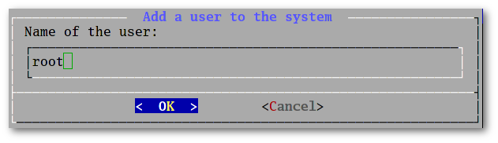
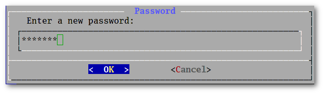
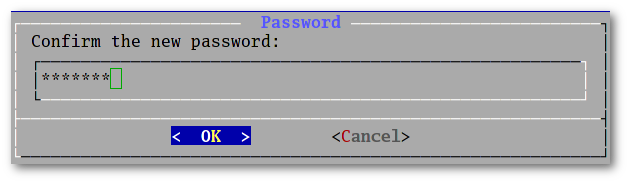

News | Information | Documentation | Installation | Packages | FAQ |
Downloads | Forum | Code | Screenshots | Wallpapers |
|
|
|
ForumSun Jun 25 16:07:12 2017 UTC General: Newstnut  New ISO with LIVE mode available New ISO with LIVE mode availableMon Jun 12 19:48:17 2017 UTC INSTALL: From GITtnut Re: Error in 2nd pass of "build your own"Sun May 28 22:40:06 2017 UTC INSTALL: From GITmyrddin  Re: Error in 2nd pass of "build your own" Re: Error in 2nd pass of "build your own"Sun May 28 17:59:21 2017 UTC INSTALL: From GITtnut  Re: Error in 2nd pass of "build your own" Re: Error in 2nd pass of "build your own"Fri May 26 07:30:33 2017 UTC INSTALL: From GITtnut Re: Error in 2nd pass of "build your own"Fri May 26 03:01:17 2017 UTC INSTALL: From GITmyrddin Error in 2nd pass of "build your own"Sun May 21 19:31:21 2017 UTC Off-Topic: Let's talk about youtnut Re: New nuty user Sun May 21 16:52:07 2017 UTC Off-Topic: Let's talk about youjohn  New nuty user New nuty user Thu May 18 12:19:48 2017 UTC General: Cards: The Package Managertnut  Re: where are CLI commands such as lspci Re: where are CLI commands such as lspciThu May 18 11:48:07 2017 UTC General: Cards: The Package Managermyrddin Re: where are CLI commands such as lspci |
Fri May 19 18:42:41 2017 UTC Frequently asked questionsContents
How to register to the Mailing ListsIt's done in a few steps:
The archives are available at: https://listengine.tuxfamily.org/nutyx.org/ NuTyX is not a multi-libIt's take much more time to build up a multilib distribution. Normaly all the libraries needs to be compiled in 64 and 32 bits. Today, it's not possible to produce a multilib because there are links created at construction / installatio of NuTyX (lib64->lib) under /lib and /usr. The installer doesn't allow me to specify a separate /home partitionThis question has been asked many times. I will try to answer it as far as possible. Modern users often have a lot of data on their computers. The size of the home folder can quickly become very large. MP3 files, photos and videos are big files. Imagine that you have a 250 GB hard disk. You say "OK, I'll take 100 G for the system and 150 for my personal data." Great! You just cut your disk into two pieces, and the home partition will fill up more quickly in proportion to its size than if you had retained a single partition. It would be nice if we could reinstall NuTyX when we wanted without having to cut the hard disk into separate partitions to preserve personal data. That's exactly how the NuTyX installer works.
Building packages in a chroot. When and Why ?The NuTyX ISO install a base system which give the user's choice between two scenarios in using the distribution: NuTyX can be considered as a "binaires" distribution.The user install the needed binaries packages by downloads them from the remote server.Once the base system is installed, the user install it's favorits applications as explain in the online documentation. A typical installation look like: get xorg lxdm xfce4 xfce4-extra firefox gvfs ntfs-3g transmission thunderbird All the binaries packages are split into base packages and sub-packages (devel, doc, man, etc), in most of the case, only the base package will be installed. It means: ![[Important]](../graphics/caution.gif) if the user want to compile a package not available in binaries,
he (she) will have to compile thoses packages in a chroot,
otherwise the compilation will always fails because of missing dependancies.
if the user want to compile a package not available in binaries,
he (she) will have to compile thoses packages in a chroot,
otherwise the compilation will always fails because of missing dependancies.
NuTyX can be considered as a "sources" distributionThe user compile all the packges he needs on the local machine.Once the base system installed, the user install the development tools: get cards.devel He (she) download the availables recipes: sudo ports -u He (She) adjust the /etc/cards.conf configuration file as: dir /usr/ports/kde5-extra dir /usr/ports/kde5 dir /usr/ports/gnome-extra dir /usr/ports/gnome dir /usr/ports/mate-extra dir /usr/ports/mate dir /usr/ports/xfce4-extra dir /usr/ports/xfce4 dir /usr/ports/gui-extra dir /usr/ports/gui dir /usr/ports/cli-extra dir /usr/ports/base base /usr/ports/base logdir /var/log/pkgbuildAnd can now compile the needed packages without being in a chroot. So for example, to compile the graphical server xorg: sudo cards depcreate xorg Is it possible to upgrade NuTyX (prior to 9.0) to NuTyX 9.X without reinstalling everything?No. The number of changes is too great. The package manager has changed, the initrd has changed, the installer has changed, and the ports location has changed. How to activate the root account ?As default, NuTyX does not activate the root account, but if you wish to compile yours own packages, it's maybe a good activate the root account. It's very simple, type: nuand choose root as user  choose a new password  and confirm the new password  and you're done. |